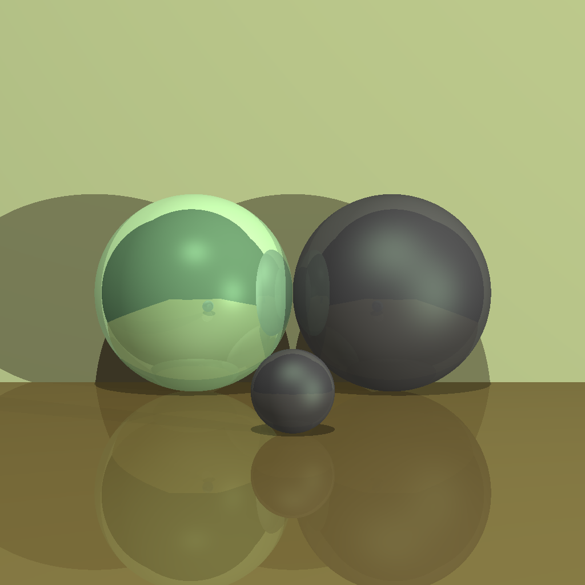
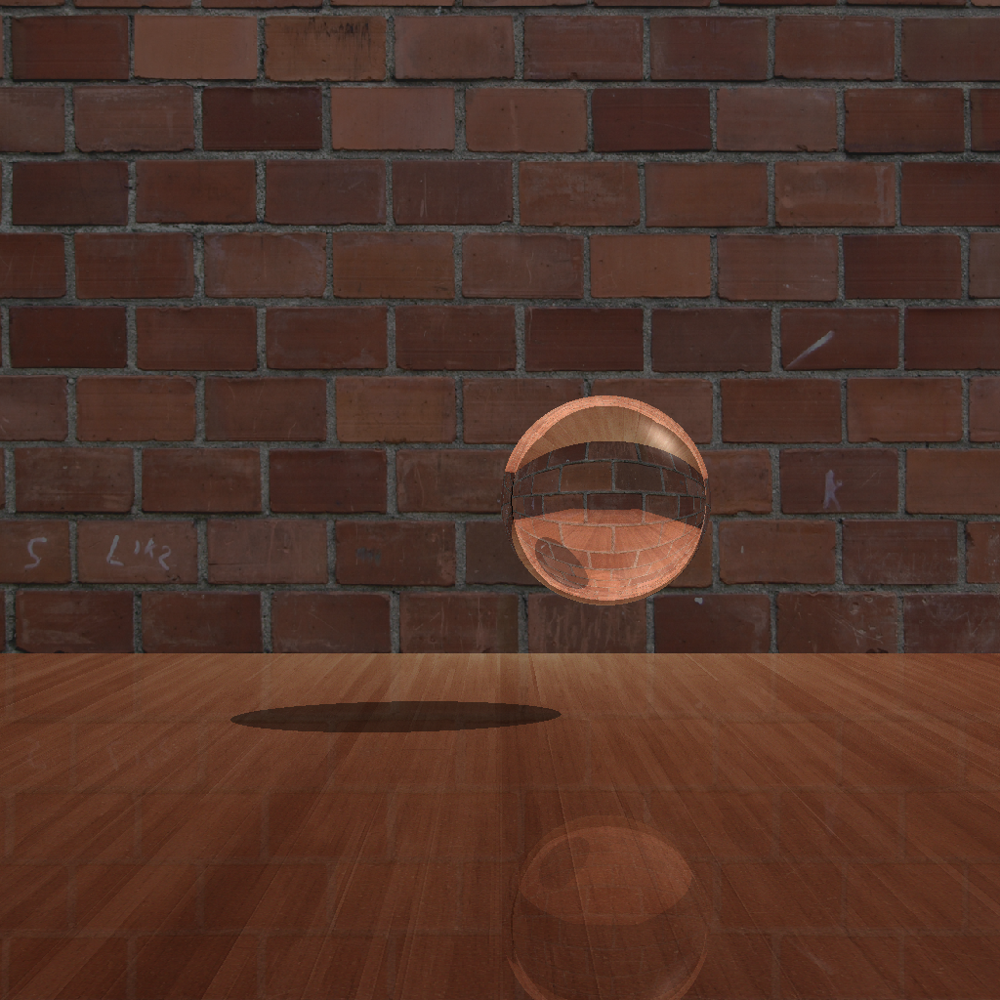
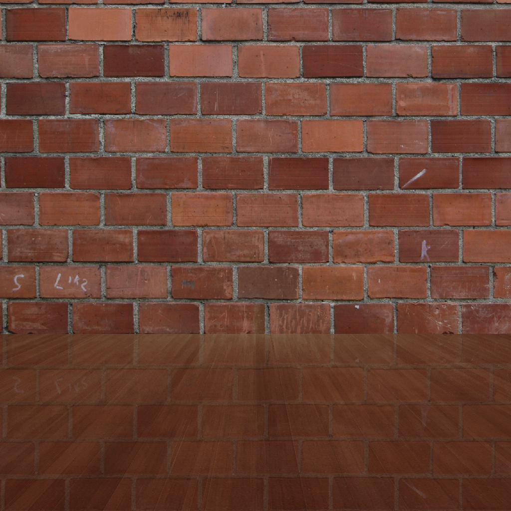
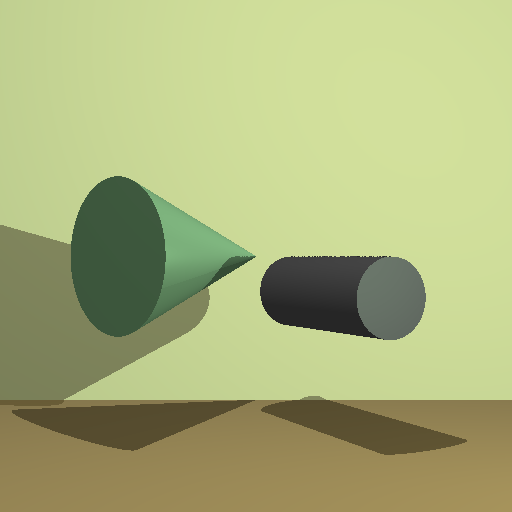
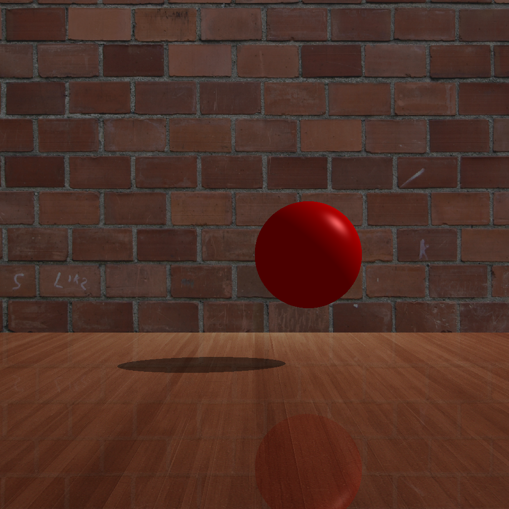
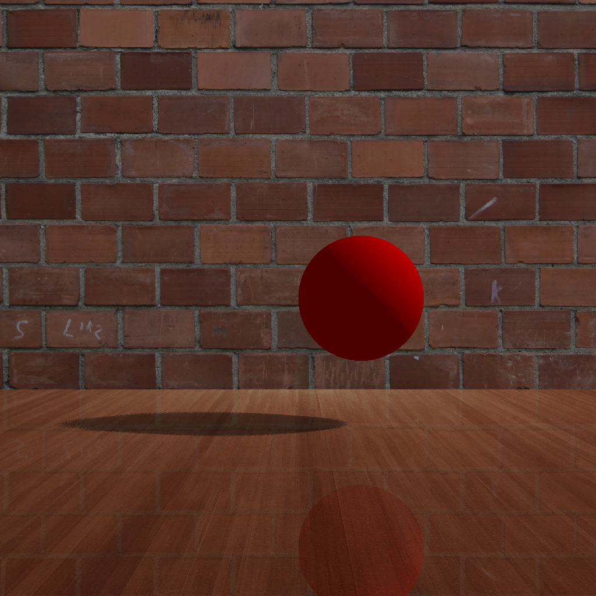
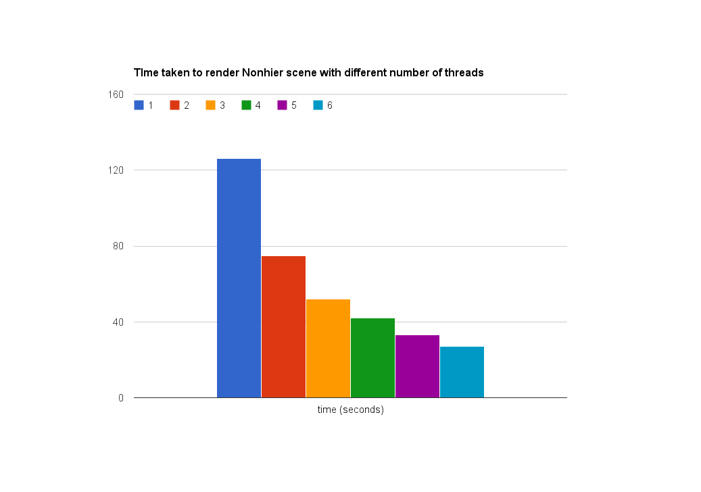
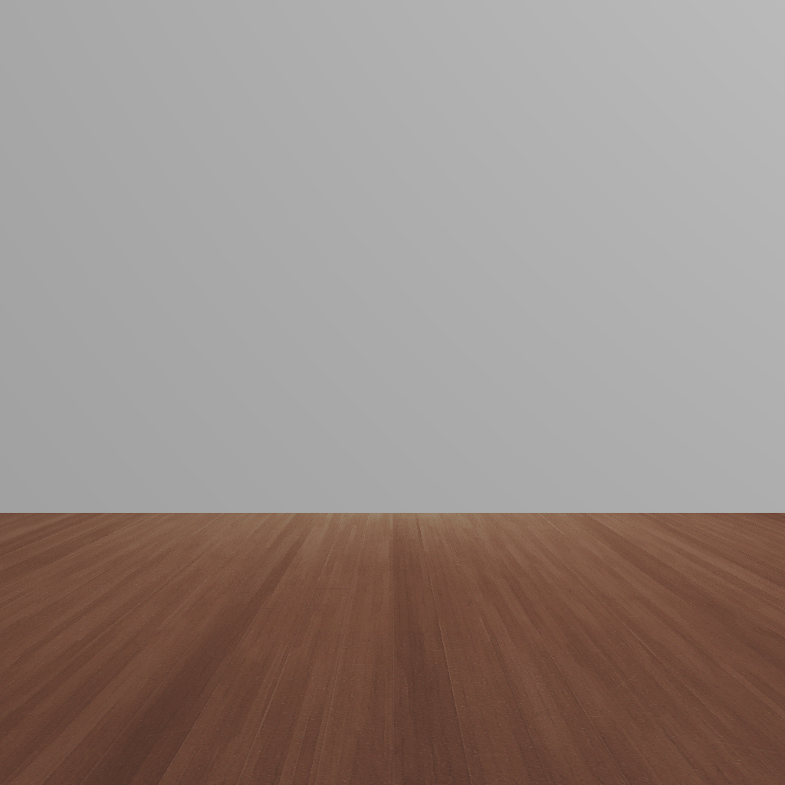
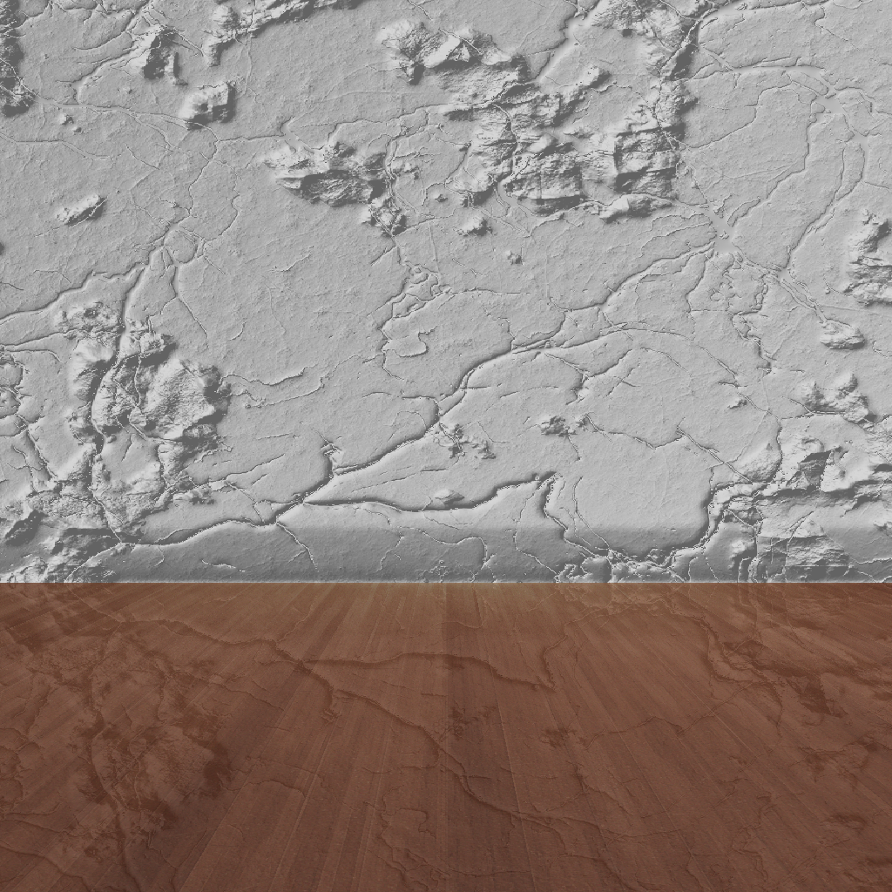
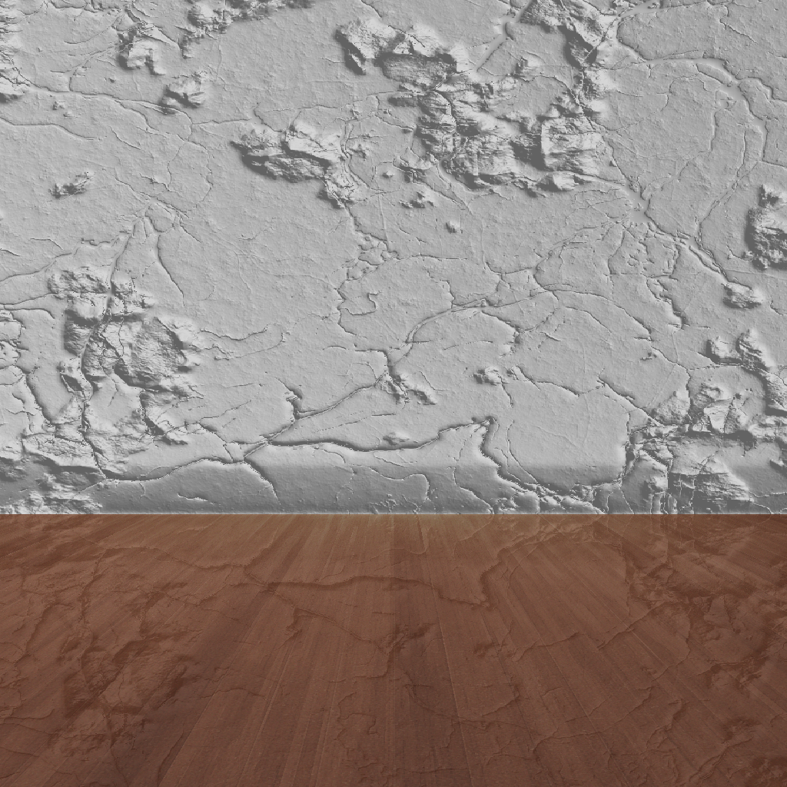

Object #2: Reflection

Object #3: Refraction

Object #4: Texture mapping

Object #5: Additional primitives: Cone and Cylinder

Object #7: soft shadows
Without soft shadow:

With soft shadow:

Object #8: Multi-processing using threads.

Object #9: Bump mapping
Scene without bump mapping:

Scene with bump mapping and light on the right:

Scene with bump mapping and light on the left:
